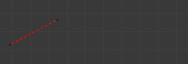
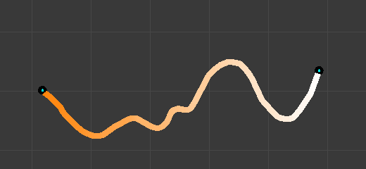
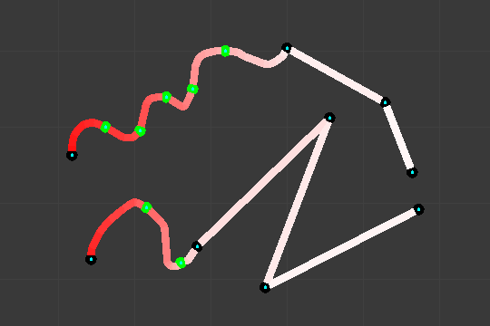

Skeleton Sketching 骨架速绘¶
骨架速绘面板。
如果你认为手动一个个骨骼创建整个绑定是无聊的，幸运的是Blender开发者都有同样的感觉，并创建了一个骨骼素描工具：Etch-a-ton，主要允许你一次画出整个骨骼链。
骨架速绘很显然的只用于3D视图 编辑模式 下。你可以在 变换Transform面板 下的 骨架速绘 子项控制它，快捷键是 N。鼠标左键 LMB 是绘画，鼠标右键 RMB 是手势。默认是没有激活这个功能的—你必须勾选 骨架速绘 选项才可以开始画骨骼链（否则你还是在标准的骨骼 编辑模式 ）.
骨架速绘的的两个步骤：
- Drawing Chains 绘图链 （称为“笔画、笔迹”）。每个笔划对应于一连串的骨骼。
- 转换为骨骼，使用不同的方法。
视图点 是很重要的，它决定未来骨骼的旋转角度：在你画它的 "父" 骨骼时未来的骨骼的Z轴将和3D视图的Z轴对齐（除非你使用 Template（模板） 转换模式）。在当前视图平面中，通过三维游标绘制，但你也可以使用 Adjust 选项在不同视图的创建一些“3D”笔画。
如果你激活了 Quick Sketch（快捷速绘） 选项，两个步骤将合并为一个步骤：一旦你完成了绘画笔画(见 绘图链Drawing Chains)，它将立刻转换成骨骼（使用当前激活模式）并删除。。这个选项使骨骼速绘更快，更高效，但会让你不可以编辑高级笔画选项。
速绘 没有 保存到Blender文件，所以你不能够中断速绘，不然你会丢失你的工作！注意速绘（sketching）是在整个Blender过程，也就是说在Blender只有一组的笔画（一个速绘）设置，而在不是每一个骨架，甚至每个文件...
Drawing Chains 绘图链¶
所以你绘制的从起点（最红或橙色部分）出发到末端的每一个笔画都是一个骨骼链。一个笔画是由几个两端黑点的线段组成- 一个线段表示至少一个骨骼，（除了 模板（Template） 转换法，见下一页 next page），所以所有的黑点代表未来的骨头的关节。有2种类型的线段，可以混合在一起：

调笔画实例。
Straight Segments 直线¶
要创建一段直线，鼠标左键 LMB 点击开始点，然后移动鼠标，不要按任何按钮—虚拟红线表示的是将要绘制的线段。再次点击鼠标左键 LMB 确认线段。每一个直线段都会产生一个并且只有一个骨，不管你使用什么转换算法（除了 模板 转换方法）。

第一段点击鼠标左键 |

第一段通过二次点击鼠标左键 |

重复上述步骤，我们现在有一四段多边形的笔画。 |
Free Segments 自由线段¶
要创建一段自由线（曲线），在开始点点击并按住鼠标左键 LMB 。然后移动鼠标绘制你的线段-像其它的任何绘画软件那样——释放鼠标左键 LMB 完成线段创建-然后你将创建一个新的直线线段，所以如果你想继续绘制自由线段你必须马上按住重新鼠标左键 LMB。
根据所使用的转换方法，自由段笔画将产生不同数量的骨骼。未来的骨骼关节点是当前的选择的模式的每一个线段的小点，仅仅对于选择的笔画。
自由线段的绘画使用了像 蜡笔工具 ( User Preferences用户设置, Edit Methods 编辑 "面板”, Grease Pencil蜡笔 组)，曼哈顿点距（Manhattan Dist）设置来控制添加新的线段。如果你觉得你的自由段太多细节，提高这个值，如果你会发现它们变得更多的锯齿，降低这个值。

在绘制第一自由段时，鼠标左键 |

完成第一段自由线的绘制，释放鼠标左键 |
如果你现在移动鼠标而没有再次按下鼠标左键 |

但如果你立刻再次按下并拖动鼠标左键 |
你可以通过点击鼠标右键 RMB 完成整个笔画的绘制。你也可以通过按 Esc 取消笔画绘制。你可以通过按住 Ctrl 键吸附笔画到网格下。同样的 Bone Sketching 面板下的 Peel Objects 按钮和标题控制栏下的“monkey” 按钮做同样的事情控制 体积 吸附元素的选择，更多细节见 snap to mesh 。
Selecting Strokes 选择笔画¶
A stroke can be selected (materialized by a solid red-to-white line), or not
(shown as an orange-to-white line) -- see 调笔画实例。 above. As usual,
you select a stroke by clicking RMB on it,
you add one to/remove one from the current selection with a Shift-RMB click,
and A (de)selects all strokes...
Modifying Strokes 修改笔画¶
你可以通过激活 骨骼速绘（Bone Sketching） 面板下的 覆盖速绘（Overdraw Sketching） 选项修改或重新绘制你的笔画。这将会修改你的笔画绘制（即点击鼠标左键 LMB 或按住）：当你绘制时，你不是创建一个新的笔画，而是修改最近的一个。
。旧的笔画将被新的笔画代替。这个选项不会注意到你是否选择了笔画，即所有的笔画都可以用这方法修改，而不仅仅是选择的那一个…注意即使它激活了这个功能，当你绘制时离其它已经存在的笔画太远，你将不可以修改它们，而是创建一个新的笔画，好像是 覆盖速绘（Overdraw Sketching） 选项没有激活一样。

调整笔画：灰色部分“未选中”（橙色）笔画将被替代为当前的笔画。 |

笔画调整完成。 |
Warning
Undo/Redo 撤销/重做
注意这里不可以使用撤销和重做速绘功能。
Gestures 手势¶
有关笔画编辑的很多事情只能通过手势来获得。按住 Shift-LMB 开始手势（这时你不是在绘制笔画），是蓝色到白色的渐变线，一个手势可以一次影响几个笔画。
一旦你已经开始“画”手势了，就没有直接的方法来取消一个手势。所以，最好的办法，如果你改变你的想法（或做了一个“假动作”），继续画直到你得到一些恶心的涂鸦，穿越你的笔画好几次。总之，一些手势的系统永远不会识别！

不必要的切割笔画。 |

一些随机绘图。 |

笔画仍然是在一块。 |


Converting to Bones 转换为骨骼¶
一旦你完成了一个或更多的笔画绘制，你可以将它们转换成骨骼，使用 骨架速绘（Bone Sketching） 面板的 转换为骨骼（Convert） 按钮。或用相应的手势（见上面 手势Gestures ）。每一个选择的笔画将产生一个骨骼链，方向是从其红色端到白色那端。注意转换一个笔画不会删除它。
有四种不同的转换方法--三个“简单”的，和一个更先进和复杂的，Template（模板） ，利用从同一骨架或从另一个骨架的骨骼作为一个模板从笔画转换,在下一页（ the next page ）将有更详细的说明。无论如何，请记住，直线段总是转换为一个和只有一个骨骼（除了 模板 转换方法），和未来的骨骼的两端关节在选定的自由段显示为的绿色点。
还需要记住的是创建的骨骼的滚动（扭转） 旋转在其 "父" 笔画绘制时已经设置(除了 模板 转换方法)-- 其Z轴在绘制时与活动的3D视图的Z轴对齐。
Adaptive 自适应¶
使用这种方法，选定的的每一个自由线段将遵循它的形状足够紧密的创建尽可能多的骨骼，这个“足够接近”的参数由 Threshold 的限制数字字段设置；更高的值，有更多的骨骼，更紧密的跟随形状。所以，越扭曲的一个自由线段，它会产生更多的骨骼。

自适应（Adaptative ）转换设置和选择笔画的预览。 |

自适应（Adaptative ）转换结果。 |


{kind=link}
{kind=link}
{kind=link}
{kind=link}
{kind=link}